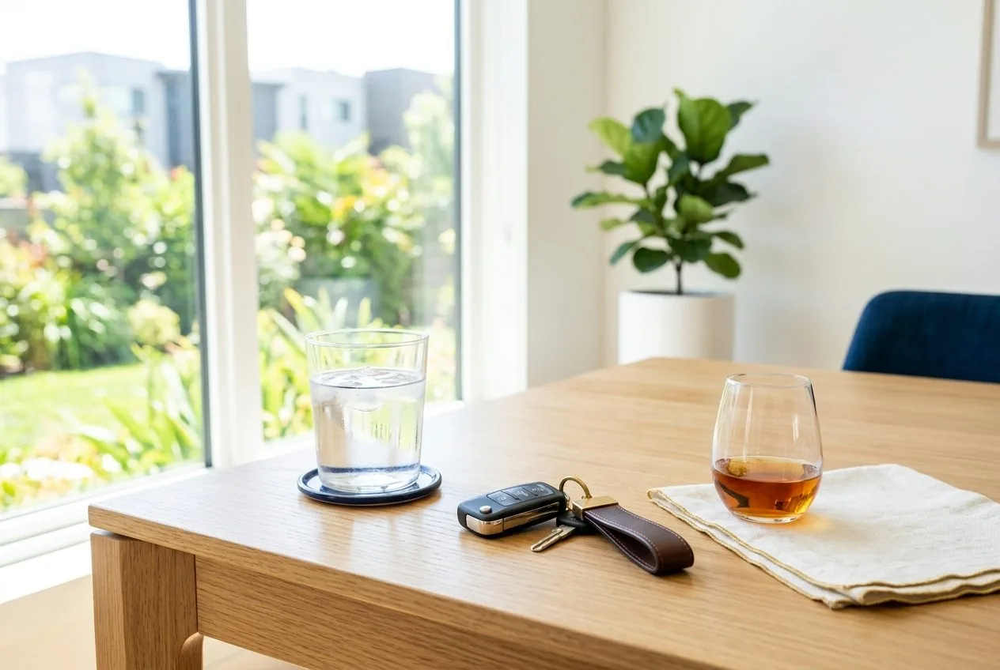

Cât durează și cât costă să-ți recuperezi despăgubirile după un accident
Două întrebări revin la fiecare consultație: cât durează și cât mă costă. Răspunsul depinde de calea aleasă — iar varianta cea mai rapidă este, de regulă, și cea mai puțin avantajoasă.
11 februarie 2026Citește
Ghid despăgubiriLovit de un șofer băut: ce despăgubiri ți se cuvin
Când vinovatul conducea sub influența alcoolului, situația ta de victimă se schimbă în bine: fapta capătă caracter penal, iar dosarul de despăgubiri are o bază mai solidă. Asigurătorul RCA plătește chiar dacă șoferul era băut.
23 august 2025Citește Daune moraleDaune morale după zilele de îngrijiri medicale: la ce sume te poți aștepta
Una dintre cele mai căutate întrebări după un accident este cât valorează daunele morale pentru un anumit număr de zile de îngrijiri medicale. Răspunsul corect: nu există un tarif pe zi, dar numărul de zile rămâne unul dintre reperele esențiale.
10 aprilie 2025Citește Ghid despăgubiriVătămare corporală din culpă: ce înseamnă și ce despăgubiri se cuvin
Vătămarea corporală din culpă este infracțiunea tipică a accidentelor rutiere cu răniți. Încadrarea ei deschide calea penală și întărește poziția victimei la obținerea despăgubirilor.
19 ianuarie 2025Citește GhidCum recunoști un avocat bun pentru despăgubiri după un accident
Mulți clienți ajung la noi nemulțumiți de avocatul anterior. Iată, concret, la ce are dreptul să se aștepte o victimă de la avocatul ei — un set de repere pe care le poți verifica imediat.
5 noiembrie 2024Citește GhidCertificatul medico-legal: cum îl obții, cât costă și de ce contează
Certificatul medico-legal este documentul care transformă leziunile tale în probă juridică. Stabilește numărul de zile de îngrijiri medicale — cifra de care depinde întregul dosar de despăgubire.
14 august 2024Citește Ghid despăgubiriZile de îngrijiri medicale: barem, pragul de 90 de zile și ce despăgubiri primești
Numărul de zile de îngrijiri medicale stabilit de medicul legist este piesa centrală a oricărui dosar după un accident rutier: decide dacă fapta este infracțiune, cât valorează daunele morale și cum se construiește dosarul. Iată ce înseamnă, cum se stabilesc și la ce sume vă puteți aștepta.
22 mai 2024Citește Ghid despăgubiriAccident rutier cu victime: ce faci imediat și cum se deschide dosarul penal
Primele zile după un accident decid soliditatea întregului dosar. Iată pașii corecți, de la asistența medicală de urgență până la cererea de despăgubire, și unde greșesc cel mai des victimele.
8 martie 2024Citește Despăgubiri pietoniPieton lovit pe trecere: drepturile tale și pașii spre despăgubire
Pietonii sunt printre cei mai vulnerabili participanți la trafic. Dacă ai fost accidentat pe trecere, ai dreptul la despăgubiri — iar calea aleasă face diferența între o sumă fixă, modică, și o despăgubire reală.
15 ianuarie 2024Citește Daune morale
Daune moraleTrauma psihică după un accident: cum se recunoaște și se despăgubește
Dincolo de leziunile fizice, accidentele rutiere lasă frecvent urme emoționale profunde — anxietate, tulburări de somn, frica de a mai conduce. Aceste suferințe se pot dovedi și se reflectă în daunele morale.
20 noiembrie 2023Citește Speță realăSpeță reală: de la 50.000 la 65.000 € daune morale pentru o victimă
Un caz concret arată de ce merită să mergi până la capăt. Clientul T.M., rănit într-un accident din 2018, a obținut în apel cu 15.000 de euro mai mult decât în primă instanță și mult peste ce oferea asigurătorul.
12 septembrie 2023Citește